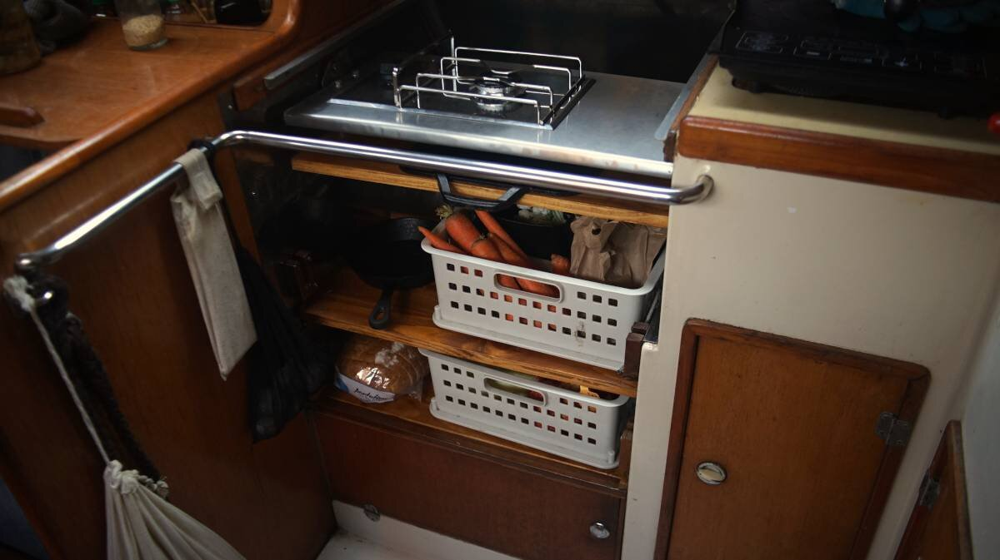

galley refit
2024.01.19
Victoria, BC.
Before:

After:
Project pages
A long time goal aboard Pino has been to replace our Force10 3-burner LPG oven and to replace it with a single burner.
We re-homed our LPG stove, it has served us well these past 8 years but it is time to build our dream galley. With the stove gone, we gained a lot of storage space. We gimballed the single LPG burner, and built drawers and shelves underneath it to store our cast iron cookware and our produce.
It is worth noting that this wasn't a spontaneous decision, we have been preparing for this for a long time. We hadn't used the oven in over 3 years, and practiced cooking with a single induction plate over 4 winters, after the experiment we realized we didn't need more than one burner. We don't limit ourselves to one-pot meals, we wait for the burner to free up to finish preparing a dish that requires the use of different pots/pans.
Living without an oven is not a concern. Overtime, we learned to make cookies, flat bread, cake, and pizza on the stovetop, and in the summer we made crunchy baguettes(see solar cooking).
Our galley design is far from perfect, we're not professionals, we are tinkerers and we like to iterate and learn. A galley like this is suited for people comfortable with adapting recipes, and who are interested in living without refrigeration.